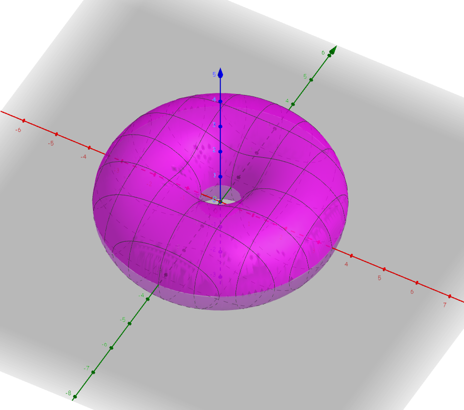

Surface Integral
Motivation
KE, CC-BY, "torus".
Have you ever thought to yourself, "I wonder how much powdered sugar I could get on a donut?"
I would assume no but I can get you on the right track.
Vectors
Disclaimer: this page will be a little out there, even for me.
A vector is a combination of a scalar and a direction. Technically, that is. Less formally, we can say that a vector is
the combination of a length and a direction. For example, an arrow pointing up with length 3 is a vector.
There are many ways to notate a vector but for this we will use the standard $x$, $y$ ordered pair notation with angled brackets. A vector is assumed
to have its tail at the origin and its head at the point shown in $\langle x, y\rangle$. Its length (by simple trigonometry) is
$\sqrt{x^2 + y^2}$ and its direction (or angle) is $\tan^{-1}(\frac{y}{x})$.
Easy enough, right? Right, but now it gets worse.
To find the surface area of a donut (torus) we must realize that a donut is 3-dimensional.
That means that our vectors will be of the form $\vec{v} = \langle x,y,z\rangle$. Our length will be $\sqrt{x^2+y^2+z^2}$ and our direction will be a little
bit (lotta bit) more complicated and unnecessary.
Operations
Let us notice that $a \cdot \langle x , y, z \rangle = \langle ax, ay, az \rangle$. Where $a$ is just a number.
Another property to notice is that $\langle x, y, z \rangle + \langle a, b, c \rangle = \langle x + a, y + b, z + c \rangle$.
Using $\hat{\imath} = \langle 1, 0, 0 \rangle$, $\hat{\jmath} = \langle 0, 1, 0 \rangle$, and $\hat{\mathcal{k}} = \langle 0, 0, 1 \rangle$,
We can rewrite any vector $\langle x,y,z\rangle$ as $x\hat{\imath} + y\hat{\jmath} + z\hat{\mathcal{k}}$.
We define the cross product of two vectors to be the determinant of the matrix made up of the basis vectors and the two
other vectors together, that is: for any two vectors, $\vec{u} = \langle x,y,z\rangle$ and $\vec{v} = \langle a,b,c \rangle$,
$$
\vec{u} \times \vec{v} = \left|
\begin{matrix}
\hat{\imath} & \hat{\jmath} & \hat{\mathcal{k}} \\
x & y & z \\
a & b & c \\
\end{matrix}
\right| =
\hat{\imath}(yc - zb) + \hat{\jmath}(za - xc) + \hat{\mathcal{k}}(xb-ya)
= \langle yc-zb,\; za - xc,\; xb-ya \rangle
$$
Geometrically, the cross product gives us a new vector that is one of the vectors that is perpendicular to both.
Surface Integral
Consider that $\Omega$ is some surface (in our case, a donut) in 3 dimensions.
$\vec{v}(t,s)$ is a function that takes in two parameters and gives out a vector. Using the desired constrained inputs for the
function, the function will map out $\Omega$.
Finally, consider $C$ being the space of the (constraint of $t$) $\times$ (the constraint of $s$).
In our case, $\Omega$ is a donut, $\vec{v}(t,s) = \langle (b+a\cos(t))\sin(s), \; (b+a\cos(t))\cos(s), \; a\sin(t) \rangle$,
and our constraints are that $t$ and $s$ both go from $0$ to $2 \pi$ so $C = [0,2\pi] \times [0, 2\pi]$.
Where $a$ is the radius of the loop and $b$ is the radius of the donut.
The formula for surface area is
$$
\iint_C \left| \frac{\partial \vec{v}}{\partial t} \times \frac{\partial \vec{v}}{\partial s} \right| dt\,ds
$$
Using our amazing calculus skills, we can rewrite this as
$$
\int\limits_0^{2\pi}\int\limits_0^{2\pi} \left| \frac{\partial \vec{v}}{\partial t} \times \frac{\partial \vec{v}}{\partial s} \right| dt\,ds
$$
Calculating the partial derivatives, we get:
$$\frac{\partial \vec{v}}{\partial t} = \langle -a \sin(s) \sin(t), \; -a \cos(s) \sin(t), \; a\cos(t) \rangle$$
And calculating the other, we get:
$$
\frac{\partial \vec{v}}{\partial s} = \langle (b + a\cos(t))\cos(s), \; -(b+a\cos(t)\sin(s)), \; 0 \rangle
$$
Skipping most of the hard work, we find the determinant
(which geometrically is the area of the parallelogram created
by the two vectors' cross product):
$$
\left| \frac{\partial \vec{v}}{\partial t} \times \frac{\partial \vec{v}}{\partial s} \right|
= ab + a^2 \cos(t)
$$
Now we can rewrite the integral and solve!
$$
\int\limits_0^{2\pi}\int\limits_0^{2\pi} ab + a^2 \cos(t) dt ds =
\int\limits_0^{2\pi} \left[ abt + a^2 \sin(t) \right]_0^{2\pi}ds
\\ = \int\limits_0^{2\pi} 2\pi ab ds = \left[ 2\pi abs \right]_0^{2\pi}
= 4\pi^2 ab
$$
Wow. We found our answer. The surface area of a donut is $4\pi^2$ times its inner radius times its outer radius.
We could have just looked that up but we didn't. Astounding.